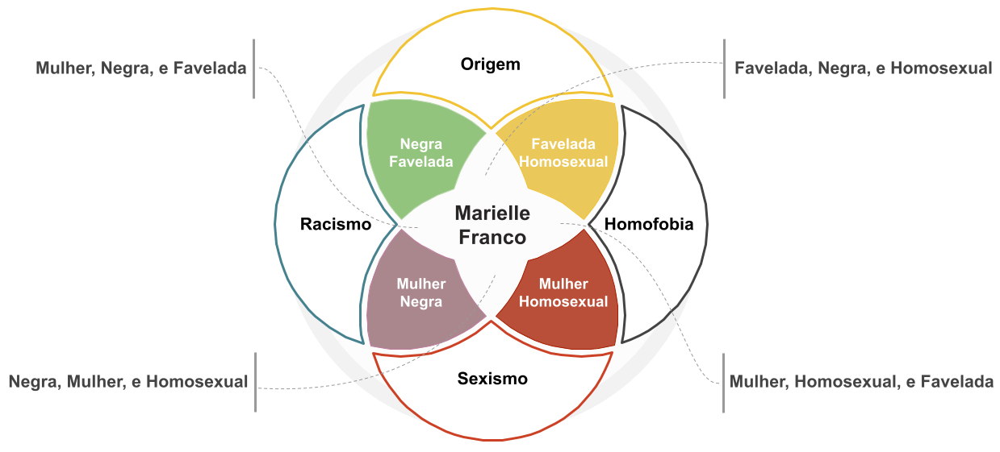

16 PLN em Redes Sociais
16.1 Introdução
O Processamento de Linguagem Natural (PLN) desempenha um papel cada vez mais significativo no cenário das redes sociais. O volume de dados advindos de redes sociais a todo instante é imenso. Dentre os dados gerados, podemos citar os dados textuais, os quais variam desde conversas informais até discussões complexas. Nas redes sociais, as pessoas expressam ideias e opiniões de maneiras diversas. Isso inclui o uso de gírias, abreviações, emojis e outros elementos da linguagem cotidiana. Tratar esse tipo de dado não é uma tarefa trivial e é desafiador para os sistemas de PLN.
Os sistemas de PLN são ferramentas indispensáveis para compreender, analisar e extrair informações. O estudo dos estilos de linguagem utilizados nas redes sociais ajuda a melhorar a compreensão de textos informais. As redes sociais são fontes valiosas de informação e seus conteúdos podem ser utilizados como corpora para treinar e testar algoritmos de PLN, permitindo que pesquisadores e desenvolvedores trabalhem com exemplos reais e relevantes. Visto que o Brasil é um dos países com maior presença nas redes sociais, e o português é o idioma predominante nessas interações, tem-se aqui uma área muito fértil para o desenvolvimento de estudos de aplicações de abordagens e PLN.
Neste capítulo buscamos abordar algumas das principais áreas de aplicação de PLN em redes sociais, discutindo os desafios encontrados. Ainda, buscamos apresentar alguns dos recursos disponíveis para suporte no desenvolvimento de estudos voltados para as tarefas apresentadas, focando em dados em língua portuguesa. Para tanto, este capítulo se organiza da seguinte maneira: na Seção Redes Sociais, apresentamos a definição de redes sociais e descrevemos sobre os conteúdos nela postados; na Seção Áreas de Aplicação, apresentamos as principais áreas de aplicação de PLN que utilizam essas redes sociais. E, na Seção Considerações finais, apresentamos as considerações finais.
16.2 Redes Sociais
Uma rede social é definida como um conjunto de dois elementos: atores e suas conexões (Wasserman; Faust, 1994). Nos últimos anos, as redes sociais (como: Facebook, Reddit, Youtube, Twitter/X, Whatsapp e Instagram) têm revolucionado a forma como indivíduos, grupos e comunidades interagem. Nelas, são compartilhados textos, fotos, vídeos e outros tipos de conteúdo. Assim, as redes sociais estabelecem um ambiente rico e dinâmico que oferece inúmeras oportunidades para o estudo e o aprimoramento de abordagens em PLN. Segundo Recuero (2009), o estudo das redes sociais na Internet objetiva analisar como as estruturas sociais surgem, de que tipo elas são e como são compostas.
De acordo com Farzindar; Inkpen (2018), usar PLN em textos provindos de mídias tradicionais (como jornal, rádio e televisão) tem sido um tópico de pesquisa popular nos últimos 25 anos. Hoje, usar PLN em textos provindos de redes sociais é uma área de pesquisa que requer adaptações dos métodos tradicionais, já que os textos provindos de redes sociais têm várias peculiaridades, principalmente devido a sua natureza. Ainda, eles podem estar escritos em diferentes idiomas e pertencerem a diferentes fontes.
As redes sociais se popularizaram no Brasil em 2004, com a criação do Orkut1. Desde lá, novas redes surgiram e com elas a percepção da necessidade e viabilidade de aplicação de abordagens em PLN para o estudo de conteúdos e comportamentos gerados nesse meio. Dentre as áreas de aplicação dessas abordagens, destacam-se a detecção de discurso de ódio e linguagem ofensiva, a detecção de ironia/sarcasmo/humor, a detecção de notícias falsas, a análise de sentimento, entre outras (Ferreira et al., 2017).
Na literatura, existe uma predominância do Twitter/X como fonte de dados, isso se deve, provavelmente, ao fato de ele oferecer uma API2 que, de forma muito simples, consegue acessar mensagens publicadas e os dados associados a seus usuários (por exemplo, o número de seguidores deste). No caso do Facebook, é necessário criar um aplicativo e obter a autorização dos usuários para que seus dados possam ser acessados/capturados (Coello; Junqueira, 2019), o que pode ser visto como um limitante na extração de informações desta rede.
No ano de 2023, algumas mudanças ocorreram nas APIs do Twitter/X e do Reddit. No Twitter/X, os pesquisadores terão que se adaptar às restrições da versão gratuita ou assinar alguns dos planos pagos para manter suas atividades. Já, no Reddit, o uso da API3 passou a ser cobrado. Portanto, é de se esperar que mudanças aconteçam nas pesquisas que utilizam corpora advindos dessas redes sociais.
Como mencionado anteriormente, o conteúdo postado nas redes sociais pode variar muito de acordo com a plataforma, o público-alvo e a intenção por trás da postagem. Abaixo descrevemos brevemente as redes sociais mais utilizadas em trabalhos de PLN sobre redes sociais em língua portuguesa.
16.2.1 Facebook
O Facebook4 é atualmente a maior rede social do mundo, com 2.9 bilhões de usuários ativos em 2023. Ela permite que os usuários criem perfis pessoais, adicionem amigos, compartilhem textos, fotos, vídeos e atualizações de status. Os usuários podem interagir com as postagens de outros usuários através de curtidas, comentários e compartilhamentos. Além disso, essa rede social também permite a criação de páginas para empresas, tornando-se uma ferramenta importante para marketing e divulgação.
16.2.2 Reddit
O Reddit5 é uma plataforma online de compartilhamento de conteúdo e discussões, organizada em comunidades chamadas subreddits. Os usuários podem enviar postagens, comentar, votar em conteúdos e interagir uns com os outros. Essa plataforma abrange uma ampla variedade de tópicos e interesses, permitindo que os usuários encontrem comunidades específicas que correspondam aos seus interesses. É um espaço onde os usuários podem trocar informações, debater, compartilhar histórias, memes e muito mais.
16.2.3 Youtube
O Youtube6 é uma plataforma de compartilhamento de vídeos que permite que os usuários compartilhem e assistam vídeos de uma variedade gêneros, incluindo filmes, programas de TV, vídeos musicais, documentários, entre outros. Também é uma ferramenta de marketing importante para muitas empresas e indivíduos, os quais usam a plataforma para compartilhar conteúdo promocional e aumentar a conscientização sobre seus produtos ou serviços.
16.2.4 Twitter/X
O Twitter/X7 é um serviço de microblogging que pode ser utilizado para transmitir pequenas atualizações de status (Russell, 2011). Nele podem ser analisados os vínculos entre amigos e seguidores, grafos sociais e descobertas de mais informações sobre os usuários, inspecionando as entidades presentes em seus tweets. Os tweets são mensagens curtas (contendo até 280 caracteres, incluindo texto, imagens, GIFs, vídeos e links para outros sites) e públicas postadas no Twitter/X. Eles têm um alcance imediato e podem se tornar viral rapidamente, dependendo do conteúdo e da quantidade de interação que recebem de outros usuários. Isso faz do Twitter/X uma plataforma poderosa para disseminar informações, ideias e tendências em tempo real.
16.2.5 Whatsapp
O Whatsapp8 permite que os usuários troquem mensagens privadas. Apesar de ser usado principalmente para conversas individuais, o WhatsApp possui recursos de grupos de conversação, onde podem participar até 256 usuários, e encaminhamento de mensagens (Cabral et al., 2021). Concebido como um aplicativo de mensagens instantâneas, o WhatsApp evoluiu para uma plataforma multifacetada, permitindo não apenas conversas privadas, mas também a formação de grupos e comunidades, compartilhamento de mídia, chamadas de voz e vídeo e até mesmo recursos empresariais.
16.2.6 Instagram
Instagram9 é uma rede social para compartilhamento de fotos e vídeos. Nela também é possível acompanhar (seguir) outras contas, curtir, comentar e compartilhar publicações. Todas as publicações realizadas no aplicativo são mostradas por meio do feed e o usuário pode visualizar as postagens das contas que ele segue. Ainda, esta rede social oferece diversas outras funcionalidades, como: boomerang, live e stories.
16.3 Áreas de Aplicação
Abaixo são descritas quatro áreas de aplicações que surgiram com a finalidade de compreender, analisar e extrair informações de textos que são publicados diariamente nas redes sociais, são elas: detecção de discurso de ódio e linguagem ofensiva, análise de sentimento, detecção de notícias falsas e detecção de ironia/sarcasmo/humor.
16.3.1 Detecção de Discurso de Ódio e Linguagem Ofensiva
A partir de definições encontradas na literatura, termos diferentes, porém semelhantes, podem ser enquadrados como discursos simbolicamente prejudiciais (por exemplo, discurso perigoso, discurso tóxico, discurso de ódio, discurso intolerante e outros). Certos discursos possuem o potencial de causar danos significativos, inclusive críticos, e podem ser considerados tóxicos (Tirrell, 2018). Discursos tóxicos podem assumir diversas formas, podendo ser um discurso persistente ou momentâneo, afetar indivíduos ou a sociedade como um todo, causando danos temporários ou permanentes. O impacto de toxinas discursivas é de natureza social, afetando comunidades e prejudicando indivíduos pertencentes aos grupos-alvos. Essas toxinas podem incluir palavras ofensivas, insultos, discriminação, discurso de ódio, difamação, ameaças ou qualquer forma de linguagem que busque macular, menosprezar ou ferir a dignidade e a integridade de indivíduos pertencentes ao grupo-alvo. De acordo com Kumar et al. (2023), comentários tóxicos são a principal forma de ódio e assédio online.
Os grupos-alvos de discursos tóxicos podem variar dependendo do contexto e da natureza do discurso. Grupos frequentemente alvos de discursos tóxicos incluem minorias étnicas e raciais, comunidade LGBTQIA, mulheres, religiões minoritárias, portadores de deficiência, refugiados e imigrantes, e grupos políticos ou ideológicos. Contudo, qualquer grupo ou indivíduo pode ser alvo de discursos tóxicos, e a disseminação desse tipo de linguagem é prejudicial para a sociedade como um todo. Indivíduos pertencentes a diferentes grupos discriminados podem ainda ser alvos de discursos interseccionais que os atacam por múltiplas frentes. A Figura 16.1, adaptada de Santana (2023), ilustra um caso em que ataques interseccionais dirigidos a uma entidade foram disseminados na Internet. A imagem busca ilustrar o que aconteceu após o assassinato em 2018 da socióloga e política brasileira Marielle Franco, quando uma rede de ódio e desinformação gerou diversos comentários online atacando sua imagem por diversas características que ela possuía, e até outros traços que foram indevidamente atribuídos a ela. Teixeira; Zamora (2019) destacam que Marielle - mulher negra, assumidamente bissexual, favelada, defensora política dos direitos humanos - foi, sem dúvida, atravessada por todo tipo de opressão desencadeada pelo sistema machista, racista e classista. Os ataques registrados neste caso foram motivados pelo ódio.

Fonte: Adaptada de (Santana, 2023)
A análise e a detecção de diferentes tipos de discursos tóxicos são um tópico de crescente interesse tanto para a área de PLN quanto demais áreas de interesse social como um todo. De acordo com Guimarães et al. (2020), quando focamos em comentários tóxicos, especialmente em notícias, o Facebook é a rede social que mais se destaca. O Reddit também introduz uma inclinação em relação à linguagem tóxica e ofensiva (Mohan et al., 2017). Por esse motivo, o conteúdo do Reddit tem sido usado para estudar microagressões (Breitfeller et al., 2019; Mollas et al., 2022) e depressão (Pirina; Çöltekin, 2018). De acordo com estudos realizados por Kumar et al. (2023), perfis que postam comentários tóxicos representam 3,1% de todas as contas que postam comentários no Reddit. Entretanto, ainda de acordo com os autores, apesar de seu percentual relativamente pequeno, tais contas desempenham um papel ativo e de alto impacto na plataforma.
Apesar dos diversos avanços pelos quais a área de PLN vem passando, a detecção de discursos tóxicos ainda é um desafio latente. O desenvolvimento de algoritmos de PLN e Aprendizado de Máquina (AM) para detectar esses tipos de conteúdo depende da disponibilidade de corpora anotados para treinamento. Conforme identificado por Trajano et al. (2023) quase todos os sistemas de detecção de toxicidade usam modelos de aprendizado supervisionado que requerem uma grande quantidade de dados rotulados10. Entre estes corpora, podemos ressaltar recursos para a língua a portuguesa como o ToLD-Br11 desenvolvido por Leite et al. (2020).
O ToLD-Br (Leite et al., 2020) é um conjunto de dados capturado do Twitter/X entre julho e agosto de 2019 com a ferramenta GATE Cloud’s Twitter Collector12. Elaborado para estudos sobre classificação automática de comentários tóxicos, este conjunto de dados tem como objetivo equilibrar o viés de anotação. Para tanto, 42 anotadores foram selecionados, com base em suas informações demográficas. Este corpus apresenta um conjunto de 21000 tweets em português manualmente anotados por três diferentes anotadores em sete categorias: LGBTQ+fobia, obsceno, insulto, racismo, misoginia e/ou xenofobia. Exemplo 16.1 apresenta uma instância de tweet obsceno e Exemplo 16.2 uma instância de tweet insulto contidos no corpus ToLD-Br.
Exemplo 16.1
“Aonde tem um monte que fala mal, mas ninguem vai embora do morro.” acha que alguem mora aqui por que quer, c*****o!? Que idéia. […]
Exemplo 16.2
[…] VAI SE F***R IRMÃO VC NÃO É FELIZ PQ NAO QUER
O estudo de discursos tóxicos é de suma importância por várias razões, abordando questões sociais, éticas e técnicas. O volume de informações gerado a partir das redes sociais e plataformas online aumenta a exposição a discursos tóxicos, o que pode causar impactos negativos na saúde mental e emocional dos usuários. Compreender e identificar esses discursos é fundamental para criar um ambiente digital mais saudável e seguro para todos. Discursos tóxicos frequentemente incluem discursos de ódio e manifestação de linguagem imprópria, ou seja, atos que podem promover a violência, intolerância e discriminação contra grupos específicos. A análise desses discursos permite identificar padrões prejudiciais e trabalhar para mitigar seus efeitos negativos.
Adicionalmente, muitos discursos tóxicos envolvem a disseminação intencional de informações incorretas, desinformação e notícias falsas (Subseção Detecção de Notícias Falsas). Ao estudar esses discursos, podemos desenvolver técnicas para detecção precoce de conteúdo enganoso, ajudando a manter a qualidade da informação nas redes. Além disso, técnicas de PLN auxiliam na detecção de linguagem irônica, sarcástica e outros formatos frequentemente usados nas redes sociais para mascarar discursos de ódio (Subseção Detecção de Ironia/Sarcasmo/Humor). Essas abordagens avançadas permitem que plataformas de redes sociais aprimorem suas ferramentas de moderação, identificando automaticamente discursos de ódio e adotando medidas para removê-los ou sinalizá-los.
Muitas iniciativas têm sido empreendidas com o intuito de possibilitar a detecção automatizada de discursos de ódio nas diferentes plataformas. Conforme mencionado por Fortuna; Nunes (2018), esse crescente interesse não se restringe apenas à ampla cobertura midiática, mas também à crescente relevância política do tema. No entanto, os autores também destacam desafios latentes, como a falta de técnicas automáticas adequadas e a escassez de dados confiáveis sobre o discurso de ódio, que continuam motivando pesquisas nessa área. Analisando estatísticas brasileiras, Dadico (2020) explana que os dados indicam que o ódio sobrevitimiza pessoas de grupos identificados por critérios de raça, cor, etnia, sexo, orientação sexual, identidade de gênero, origem nacional e regional, sem-teto ou deficiência, entre outros atributos que os expõem a maior vulnerabilidade social. Apesar da normalização do ódio, esse discurso é parte de uma narrativa socio-histórica que traz em si os modos de pensar de uma cultura. É pela língua que nos mostramos como somos, e enquanto ela pode ser um instrumento de empoderamento, também pode gerar exclusão, opressão. O avanço de estudos de aplicação de abordagens de PLN para a detecção de tais conteúdos é essencial. Entretanto, avanços nesta área de estudos dependem fundamentalmente de conjuntos de dados anotados, ferramentas de análise de texto e modelos específicos disponibilizados para tal.
Para o português, Fortuna et al. (2019) criou um conjunto de dados para a classificação do discurso de ódio, o HLPHSD13. As instâncias deste conjunto foram coletadas através do uso da API do Twitter/X. Para isso, foram usadas palavras-chave e hashtags como #dyke ou #womensPlaceIsInTheKitchen coletadas entre janeiro e março de 2017 (majoritariamente). Este conjunto de dados contém conteúdo de 1156 usuários diferentes e abrange diferentes tipos de discriminação, com base sobre religião, gênero, orientação sexual, etnia, e migração. Nele foram feitas duas anotações: binária (“é discurso de ódio” ou “não é discurso de ódio”) e hierárquica (“racismo”, “sexismo”, ou “homofobia”). Exemplo 16.3 apresenta uma instância de tweet que é discurso de ódio e Exemplo 16.4 uma instância de tweet que não é discurso de ódio contidos no corpus HLPHSD.
Exemplo 16.3
Os negros deveriam voltar para suas terras!!
Exemplo 16.4
Carne e feijão preto são deliciosos!
Na anotação binária, cada tweet foi anotado por três diferentes anotadores. Por fim, uma votação majoritária para determinar classificação final foi realizada nos 3059 tweets. Os autores realizaram experimentos utilizando uma LSTM combinada com embeddings pré-treinados para realizar uma classificação base a partir deste conjunto de dados e assim demonstrar seu potencial de uso. O resultado obtido foi a medida-F de 78%.
Outro conjunto de dados disponível na literatura que foi elaborado para estudos sobre a classificação do discurso de ódio é o HateBR14, elaborado por Vargas et al. (2022). O HateBR é composto por 7000 textos sobre o domínio político coletados através da API do Instagram. Neste conjunto de dados, constam postagens de seis contas pré-definidas (gênero - 4 mulheres e 2 homens, posição política - 3 liberais e 3 conservadores). Sua anotação foi feita de três maneiras: binária (“é ofensivo” ou “não é ofensivo”), granularidade (“levemente ofensivo”, “moderadamente ofensivo” e “altamente ofensivo”) e grupos de discursos de ódio (“partidarismo”, “sexismo”, “intolerância religiosa”, “apologia pela ditadura”, “gordofobia”, “homofobia”, “racismo”, “anti-semitismo” e “xenofobia”). Exemplo 16.5 apresenta uma instância de texto que é discurso de ódio e Exemplo 16.6 uma instância de texto que não é discurso de ódio contidos no corpus HateBR.
Exemplo 16.5
Vagabunda. Comunista. Mentirosa. O povo chileno nao merece uma desgraça desta
Exemplo 16.6
Pois é, deveria devolver o dinheiro aos cofres públicos do Brasil. Canalha.
Tal como diversas outras tarefas de aplicação de abordagens de PLN, apesar dos esforços recentes, a detecção de discurso de ódio em português fica muito atrás do inglês (Jahan; Oussalah, 2023). A detecção de discursos de ódio em língua portuguesa é, sem dúvida, uma área promissora de pesquisa no campo do PLN. Redes sociais são um terreno fértil para a disseminação de discursos de ódio em qualquer idioma. Dada a popularidade da língua portuguesa nas redes sociais, tem-se aqui uma área muito fértil para o desenvolvimento de estudos de aplicações de abordagens e PLN. A detecção de discursos de ódio em português envolve desafios únicos, como a diversidade linguística, o uso de gírias e expressões regionais, além das particularidades culturais. Isso torna a pesquisa nessa área empolgante e relevante, não apenas do ponto de vista técnico, mas também do ponto de vista social e ético.
Embora muito do que é visto em discursos tóxicos seja também discurso de ódio, cabe ressaltar que outras formas de toxicidade também são manifestas através de discursos. Há também o que chamamos de linguagem ofensiva. Diferentemente de discursos de ódio, os quais são voltados para indivíduos ou grupos específicos de pessoas com base em características identitárias, a linguagem ofensiva tem a intenção de magoar, insultar ou provocar os sentimentos das pessoas, sem necessariamente ter um objetivo discriminatório. É importante notar que a linha entre discurso de ódio e linguagem ofensiva nem sempre é clara, e o contexto em que o conteúdo é apresentado pode influenciar a percepção do quão prejudicial ele é. Isto é, todo discurso de ódio é uma linguagem ofensiva, mas nem toda linguagem que é ofensiva é também um discurso de ódio. Ambos podem ser prejudiciais e problemáticos em diferentes aspectos, e muitas vezes é necessário avaliar cuidadosamente o conteúdo para entender suas implicações e tomar medidas apropriadas para mitigar seus efeitos negativos. Tal qual os demais discursos considerados tóxicos, é importante também o desenvolvimento de meios de detecção de linguagem ofensiva.
Conjuntos de dados voltados para a detecção deste tipo de linguagem podem ser usados em um contexto que não é necessariamente de ódio. Para o português brasileiro, Trajano et al. (2023) construíram um conjunto de dados voltados a detecção de linguagem ofensiva, nomeado OLID-Br15. Exemplo 16.7 apresenta uma instância de texto que é insulto e sexismo e Exemplo 16.8 uma instância de texto que é insulto e ideologia contidos no corpus OLID-Br.
Exemplo 16.7
Pior do que adolescentezinhas de merda…são pessoas que levam filmes tão a sério! O livro/filme é dela, ela faz o que quiser! E por mais ruim que seja, ta rendendo milhões (:
Exemplo 16.8
“Heterofobismo?” Pelo que eu saiba héteros nunca foram perseguidos, mortos e torturados por centenas de anos pela sua orientação sexual. Em alguns países do Oriente, gays são presos e , as vezes, mortos só por causa de orientação sexual. Isso NUNCA aconteceu e nem vai acontecer com héteros. A implantação nas escolas da ideia de que existem casais diferentes é ótima! O conhecimento é a arma contra a ignorância e tenho certeza que vai ajudar muitas crianças confusas por aí! “Heterofobismo?” Estude mais um pouco antes de abrir a boca e passar vergonha, por favor.
Inspirado em outros corpora similares (do inglês, Offensive Language Identification Datasets ou OLID), construídos para outros idiomas, o OLID-Br reúne dados de diferentes fontes: Twitter/X, YouTube, e ainda de outros conjuntos de dados em português anotados com um esquema de anotação distinto do proposto. Os conjuntos de dados utilizados foram o OffComBR de Pelle; Moreira (2017), NCCVG16 de Nascimento et al. (2019), HLPHSD de Fortuna et al. (2019), e ToLD-Br de Leite et al. (2020). O conjunto de dados OLID-BR contém anotações para cinco tarefas, são elas: (1) classificação de comentário tóxico: classificação binária utilizada para identificar se um comentário é ou não tóxico; (2) detecção do tipo de toxicidade: classificação multi-rótulo que identifica os rótulos de toxicidade presentes em um comentário tóxico; (3) classificação de alvo de toxicidade: classificação binária que prevê se um comentário tóxico é direcionado ou não; (4) identificação do tipo de alvo de toxicidade: classificação multiclasse que identifica o tipo de alvo de um comentário direcionado; e (5) categorização de spans: tarefa voltada a detecção de spans (parte de um texto) em um comentário tóxico. O conjunto de dados contém 6.354 (extensível para 13.538) comentários rotulados usando um esquema de anotação de três camadas com granulação fina compatível com conjuntos de dados em outros idiomas, o que permite o treinamento de modelos multilíngues.
16.3.2 Análise de Sentimento
Com a proliferação das redes sociais e das plataformas de avaliação online (tais como: TripAdvisor17, Booking18 e Airbnb19), assim como em diversos sites de e-commerce, uma infinidade de textos opinativos são publicados diariamente. Estes textos têm grande potencial para apoiar os processos de tomada de decisão (Zhang et al., 2023). A Análise de Sentimento (AS) estuda as opiniões, sentimentos, avaliações, apreciações, atitudes e emoções em relação a entidades como produtos, serviços, organizações, indivíduos, problemas, eventos, tópicos e seus diferentes aspectos expressos em textos (Liu, 2012). Nesta área desenvolvem-se aplicações em diversos campos do conhecimento como: política, finanças e marketing20.
Existem muitos nomes e tarefas ligeiramente diferentes, por exemplo, análise de sentimento no nível de aspecto, reconhecimento/classificação de emoções etc. A AS visa encontrar soluções computacionais para extrair e analisar as opiniões das pessoas sobre uma entidade e seus diferentes aspectos (Pereira, 2021). Como as opiniões podem ser categorizadas com polaridades (por exemplo, positivo e negativo), a AS pode ser considerada uma tarefa de classificação de texto (Zhang et al., 2023). E como se trata de uma tarefa de classificação de texto, de acordo com Tan et al. (2023), três tipos de abordagens podem ser utilizadas, são elas: AM, Aprendizado Profundo (AP) e Aprendizado Conjunto (AC), usualmente referido como ensemble learning. Abordagens baseadas em AM, como classificador Ingênuo de Bayes (em inglês, Naïve Bayes ou NB) de Zhang (2004) e Máquina de Vetor de Suporte (em inglês, Support Vector Machine ou SVM) de Cortes; Vapnik (1995), usam modelos matemáticos para prever sentimentos. Já, as abordagens baseadas em AP, como Redes de Memória Longa de Curto Prazo (em inglês, Long Short-Term Memory ou LSTM) de Hochreiter; Schmidhuber (1997), utilizam Redes Neurais Artificiais para prever sentimentos. O AC combina vários classificadores para obter um melhor desempenho de AS.
No trabalho de Pereira (2021) é apresentada uma pesquisa de AS em língua portuguesa. Nele são apresentados os principais tipos de abordagens de AS, as quais podem ser baseadas em AM (classificação também proposta por Tan et al. (2023)), em léxico de sentimento, em conceitos, e híbrida. Abordagens baseadas em AM utilizam algoritmos de AM tradicionais. Já, abordagens baseadas em léxico de sentimento obtêm o grau de polaridade de opinião ou emoção de um léxico de sentimento. As abordagens baseadas em conceito usam redes de conceito (por exemplo: ontologias) para realizar a análise semântica do texto. Por fim, as abordagens híbridas, combinam as abordagens mencionadas anteriormente.
Em geral, a AS tem sido investigada principalmente em três níveis de granularidade: documento, sentença ou aspecto (Liu, 2012). No nível de documento, um sentimento é atribuído ao documento como um todo (Exemplo 16.9 com polaridade positiva). No nível de sentença, um sentimento é atribuído a cada sentença do documento (Exemplo 16.10 com polaridade positiva). No nível de aspecto, um sentimento é atribuído a cada aspecto de determinada entidade. É uma análise mais refinada, onde os aspectos podem ser atributos ou componentes de uma entidade (Exemplo 16.11 com polaridade positiva para o aspecto café da manhã).
Exemplo 16.9
O café da manhã é incrível. O hotel é um ótimo lugar para relaxar e curtir cada momento.
Exemplo 16.10
O café da manhã é incrível.
Exemplo 16.11
O café da manhã é incrível.
Abordagens de AS são altamente dependentes do uso de ferramentas de PLN, pois precisam interpretar textos em linguagem natural. Logo, desenvolver soluções específicas para a língua portuguesa está diretamente condicionado ao desenvolvimento de recursos linguísticos para a língua. Segundo Lo et al. (2017), o português é uma das línguas com poucos recursos linguísticos disponíveis, apesar de estar entre as línguas mais utilizadas na Web.
Dentre os recursos para o português brasileiro, podemos citar os léxicos de sentimentos: OpLexicon21 (Souza et al., 2011), OpenWordNet-PT22 (De Paiva et al., 2012), SentiLex23 (Silva et al., 2012), Reli-Lex24 (Freitas, 2013), Brazilian Portuguese LIWC Dictionary25 (Balage Filho et al., 2013), Word NetAffect-BR26 (Pasqualotti, 2015), Personalitatem Lexicon (Machado et al., 2015), AffectPT-BR27 (Carvalho et al., 2018) e LexReli (Machado et al., 2018).
- O OpLexicon (Souza et al., 2011) possui 30.322 palavras (23.433 adjetivos e 6.889 verbos) e foi construído com base em um corpus do português brasileiro (composto por 346 resenhas de filmes e 970 textos jornalísticos), no thesaurus denominado TEP28 (do português, Thesaurus Eletrônico Básico para o Português do Brasil) de Dias-da-Silva; Morales (2003) e no léxico de sentimento de Hu; Liu (2004) traduzido para o português.
- A base de dados da OpenWordNet-PT (De Paiva et al., 2012) é o resultado da tradução da base de dados da WordNet de Princeton29, portanto, contém uma base de dados com grande abrangência, possui 62034 sentidos de pares de palavras e 45421 palavras únicas.
- A versão 2 do SentiLex (Silva et al., 2012) é composta por 82347 formas flexionadas, organizadas em adjetivos (16863), substantivos (1280), verbos (29504) e expressões idiomáticas (34700).
- O ReLi-Lex (Freitas, 2013) é derivado do corpus ReLi de Freitas et al. (2012), que é composto por resenhas de livros publicadas na internet e possui 1600 resenhas de treze livros (sete autores), este léxico contém 609 entradas.
- O Brazilian Portuguese LIWC Dictionary (Balage Filho et al., 2013) é um léxico disponível para a língua portuguesa, construído a partir do LIWC de Pennebaker et al. (2001), ou seja, foi resultado de tradução automática, utilizando diversos dicionários bilíngues português-inglês e possui 127.149 instâncias.
- O WordNetAffect-BR (Pasqualotti, 2015) é um vocabulário de emoções que possui 289 palavras (adjetivos e substantivos).
- O Personalitatem Lexicon (Machado et al., 2015) contém lexemas de conotação afetiva baseada nos traços de personalidade e foi construído com base no Linguistic Inquiry e Word Count (LIWC) 2.015.
- O AffectPT-BR (Carvalho et al., 2018) tem um total de 1.139 palavras atribuídas na categoria “afeto”, 479 em “posemo” e 661 em “negemo”.
- O LexReli (Machado et al., 2018) é uma combinação de três léxicos, OpLexicon (Souza et al., 2011), SentiLex (Silva et al., 2012) e Brazilian Portuguese LIWC Dictionary (Balage Filho et al., 2013), especializado em identificar a polaridade de aspectos em textos opinativos sobre livros e contém 1.543 entradas.
Além dos léxicos há também os corpora anotados para a tarefa de AS: ReLi (Freitas et al., 2012), comentários sobre hotéis publicados no TripAdvisor (Freitas, 2015), comentários sobre produtos publicados no Buscapé30 (Avanço; Nunes, 2014), comentários sobre restaurantes (Farias et al., 2016), TweetSentBR31 (Brum; Nunes, 2018), UTLCorpus32 (Sousa et al., 2019) e tweets sobre a pandemia de COVID-19 (Vargas et al., 2020). Exemplo 16.12 apresenta uma instância de texto que é positivo e Exemplo 16.13 uma instância de texto que é negativo contidos no corpus ReLi. Exemplo 16.14 apresenta uma instância de texto que é positivo, Exemplo 16.15 uma instância de texto que é negativo e Exemplo 16.16 uma instância de texto que é neutro contidos no corpus TweetSentBR. Exemplo 16.17 é um comentário sobre restaurante onde o aspecto sobremesa é positivo e o atendimento é negativo.
Exemplo 16.12
impossível abandonar o livro pela metade
Exemplo 16.13
a tradução deveria ser CRAPúsluco
Exemplo 16.14
Essa mulher que faz voz de siri e do google tradutor é mó linda #TheNoite
Exemplo 16.15
Nunca fiquei tão bravo numa eliminação quanto hoje, Mas fazer o que, né? #HellsKitchenBR
Exemplo 16.16
Vamos acorda esse prédio!!!!!! #AltasHoras @luansantana
Exemplo 16.17
As sobremesas deste restaurante são deliciosas, mas o atendimento é muito ruim.
No ano de 2022, foi proposto um desafio sobre AS no nível de aspecto (em inglês, Aspect-based Sentiment Analysis ou ABSA) para língua portuguesa no IberLEF33 denominado ABSAPT34. A proposta do ABSAPT foi inspirada em competições propostas em outros idiomas, como SemEval (Pontiki et al., 2014, 2015, 2016) para o inglês e EVALITA (Mattei et al., 2020) para o italiano. Além disso, tinha como público-alvo acadêmicos, pesquisadores e profissionais de empresas privadas. Na competição participaram cinco equipes de diferentes universidades e institutos do Brasil. O corpus disponibilizado na competição foi desenvolvido por Freitas (2015) e Corrêa (2021). Os participantes usaram diferentes tipos de abordagens para resolver a tarefa de ABSA, a qual foi dividida em duas, identificação de aspectos e extração de polaridade destes aspectos. O time da UFSCAR (Assi et al., 2022) propôs uma solução baseada em regras e léxico de sentimento, os times do NILC (Machado; Pardo, 2022) e da UFPR (Heinrich; Marchi, 2022) propuseram soluções baseadas em AM, utilizando algoritmos de AM tradicionais como Conditional Random Field (CRF) e os times Deep Learning Brasil (Gomes et al., 2022), PiLN (Ricarte Neto et al., 2022) e UFPR (Heinrich; Marchi, 2022) propuseram soluções baseada em AP, utilizando Transformers (Silva et al., 2022). Enfim, estratégias como estas, especialmente para línguas com poucos recursos como o português, são extremamente importantes.
16.3.3 Detecção de Notícias Falsas
Uma notícia falsa é uma mensagem transmitida conscientemente por um remetente para promover uma falsa crença ou conclusão por parte do destinatário (Fuller et al., 2006). Segundo Oliveira et al. (2020), a classificação de notícias falsas pode ser vista como uma execução de uma classificação binária entre falso ou verdadeiro. A principal diferença entre a definição dos problemas de classificação de notícias falsas é em função dos diferentes esquemas de anotação ou contextos de aplicação em diferentes conjuntos de dados. Em geral, os dados são coletados de declarações anotadas em sites de verificação de fatos, com os rótulos “verdadeiro” ou “falso”. No Brasil, algumas agências de checagem são: Agência Lupa35, Aos Fatos36, Fato ou Fake37 e Comprova38.
A detecção de notícias falsas, também conhecidas como fake news, em redes sociais é uma área de pesquisa crítica e desafiadora. A aplicação eficaz de técnicas de PLN nesse contexto é crucial para preservar a integridade da informação online e combater a desinformação que pode trazer consequências sérias tanto na política, quanto na economia, e ainda na sociedade como um todo. O PLN desempenha um papel fundamental no desenvolvimento de abordagens eficazes para lidar com esse problema (veja Capítulo Detecção Automática de Notícias Falsas). Apesar do problema de disseminação de notícias falsas estar presente em todas as redes sociais, algumas tendem a ter o compartilhamento deste tipo de conteúdo mais dissipado. De acordo com Cabral et al. (2021), o Whatsapp facilita a disseminação rápida de desinformação. No Brasil, cerca de 35% das notícias falsas são compartilhadas através do WhatsApp (Newman et al., 2020), e 40,7% destes mensagens são compartilhadas após serem desmentidas (Resende et al., 2019).
Na literatura, encontramos alguns corpora, descritos na língua portuguesa, anotados para a tarefa de detecção de notícias falsas em língua portuguesa, são eles: COVID-1939, FakeTweetBr40 de Cordeiro; Pinheiro (2019), Fake.br-Corpus41 de (Monteiro et al., 2018) e FakeWhatsApp42 de Cunha (2021). O COVID-19 contém notícias sobre a cura da COVID-19 postadas no Twitter/X. O FakeTweetBr é um corpus de notícias falsas também advindo do Twitter/X. O Fake.br-Corpus contém notícias classificadas em seis grandes categorias (política, TV e celebridades, sociedade e notícias diárias, ciência e tecnologia, economia, religião) extraídas do G143, Folha de São Paulo44 e Estadão45. O FakeWhatsApp possui mensagens anônimas do WhatsApp de grupos públicos do português brasileiro para detecção automática de desinformação textual e de usuários maliciosos. Exemplo 16.18 apresenta uma mensagem falsa e Exemplo 16.19 apresenta uma mensagem verdadeira contidas no corpus FakeWhatsApp.
Exemplo 16.18
Olhem reportagem da TV italiana RAÍ Essa matéria é de 2015 e apresenta a preocupação da comunidade científica a respeito das pesquisas feitas pelo Instituto de virulogia de Wuhan com o coronavirus de morcegos, combinando - o geneticamente com o SARS para fazê-lo mais contagioso, a fim de estudar seus efeitos.
Exemplo 16.19
Em novembro de 2015 a televisão italiana apresentou uma matéria que denunciava que cientistas chineses haviam desenvolvido um super virus capaz de desencadear pneumonia aguda em seres humanos.
Um dos trabalhos recentes que utiliza Aprendizado Profundo (AP) na detecção de notícias falsas é o trabalho de Narde (2021). Nele foram utilizados diferentes modelos (ELECTRA de Clark et al. (2020), RoBERTa de Liu et al. (2021), XLM-R de Conneau et al. (2020), Multilingual BERT de Devlin et al. (2019) e BERTimbau de Souza et al. (2020)) para detectar notícias falsas em redes sociais. O modelo BERTimbau (Souza et al., 2020) com 6 épocas foi o que obteve acurácia e medida-F superior a todos outros os modelos utilizados nos experimentos, medida-F de 95%.
16.3.4 Detecção de Ironia/Sarcasmo/Humor
Apesar dos avanços na área de Análise de Sentimentos (Subseção Análise de Sentimento), ela ainda se depara com vários desafios. Entre eles, destaca-se o entendimento de figuras de linguagem (ironia/sarcasmo/humor). As figuras de linguagem são difundidas em quase qualquer gênero de texto e são especialmente comuns nos textos da Web e das redes sociais, em plataformas como o Twitter/X (Ghosh et al., 2015).
Existe uma linha tênue entre os conceitos de ironia, sarcasmo e humor. Reyes et al. (2012) define a ironia como uma “ligeira fronteira no significado do sarcasmo e da sátira”. Gibbs; Colston (2001) afirmam que o sarcasmo, combinado com jocosidade, hipérbole, perguntas retóricas e eufemismo, são tipos de ironia. Tradicionalmente, a ironia é conhecida como o oposto do significado literal (Grice, 1975).
Dentre os trabalhos aplicados à tarefa de detecção de ironia para a língua portuguesa, podemos citar: Carvalho et al. (2009), Freitas et al. (2014) e Silva (2018). Nos trabalhos de Carvalho et al. (2009) e Freitas et al. (2014) são propostas pistas linguísticas para detectar ironia. Em Carvalho et al. (2009), os autores mostraram que é possível identificar opiniões irônicas em comentários, com precisão relativamente alta (de 45% a 85%), usando padrões linguísticos relativamente simples, tais como: emoticons, expressões onomatopeicas para risos, sinais de pontuação, aspas e interjeições positivas (“viva”, “parabéns”, “força” etc.). Ainda, em Freitas et al. (2014) padrões linguísticos foram aplicados no corpus sobre o assunto “fim do mundo” extraído do Twitter/X (Exemplo 16.20 de tweet irônico com emoticons e Exemplo 16.21 de tweet irônico com sinais de pontuação e expressões onomatopeicas para risos presentes no corpus sobre o assunto “fim do mundo”).
Exemplo 16.20
O fim domundo não chegou ainda porque esta engarrafado naBR116. #GauchanoFimdoMundo :)
Exemplo 16.21
Todo mundo tirando sarro do fim do mundo…oquei!!!…mas quero ver amanhã, qualquer temporalzinhovai todo mundo se mijar de medo…hahaha
Esses padrões estão relacionados ao português brasileiro, mas a metodologia pode ser facilmente transferida para análises em outras línguas. Isso foi feito no trabalho de Freitas et al. (2020), no qual um subconjunto de padrões foi testado em corpora de diferentes idiomas (inglês, italiano e espanhol). Em Silva (2018), o autor descreve sobre o processo de geração de um corpus de ironia para a língua portuguesa, bem como, a criação de um modelo pré-treinado de uma Rede Neural Convolucional (em inglês, Convolutional Neural Network ou CNN) para detectar ironia. A CNN foi capaz de adaptar-se e detectar automaticamente as figuras de linguagem em questão. Tal abordagem mostrou-se satisfatória para detecção de ironia, obtendo medida-F de 89,78%.
No ano de 2021, foi proposto um desafio sobre detecção de ironia para língua portuguesa no IberLEF46 denominado IDPT47. A proposta do IDPT foi inspirada em competições proposta em outros idiomas, como SemEval (Hee et al., 2018) para o inglês, IronITA (Cignarella et al., 2018) para o italiano, IroSvA (Bueno et al., 2019) para o espanhol e IDAT (Ghanem et al., 2019) para o árabe. Participaram da tarefa seis equipes de universidades e de empresas de quatro diferentes países: Brasil, China, Portugal e Espanha. Os corpora disponibilizados na competição contêm textos (tweets e notícias) sobre diferentes temas. Exemplo 16.22 de notícia irônica, Exemplo 16.23 de notícia não irônica, Exemplo 16.24 de tweet irônico e Exemplo 16.25 de tweet não irônico contidos no corpus do desafio IDPT.
Exemplo 16.22
A criatura chegou ao Rio de Janeiro e deve conceder entrevista na tarde de hoje.
Exemplo 16.23
A superlotação de hospitais da região metropolitana de Belo Horizonte preocupa a capital, já que a cidade é referência hospitalar da macrorregião Central e, caso não haja vagas na cidade de origem, os pacientes são transferidos para BH. No momento, cerca de 30% dos leitos de terapia intensiva e enfermaria da capital estão ocupados com pacientes de outras cidades.
Exemplo 16.24
Agora deu vontade de me alistar… #sqn #exercitosuperfaturaatecerveja https://t.co/Pp6vx36jzN
Exemplo 16.25
Agora a festa dos europeus comemorando o Mundial é contagiante hein?
O conjunto de dados de treinamento foi desenvolvido por Freitas et al. (2014), Silva (2018) e Schubert; Freitas (2020). Os participantes usaram abordagens tradicionais de AM (como: SVM, NB e outros) e/ou AP (como: Transformers). Os times que atingiram os melhores resultados foram o BERT4EVER (Jiang et al., 2021) e PiLN (Anchiêta et al., 2021). BERT4EVER (Jiang et al., 2021) utilizou Transformers e obteve uma acurácia balanceada de 92% para conjunto de dados de notícias. Para o conjunto de dados composto por tweets, a equipe PiLN (Anchiêta et al., 2021) utilizou superficial features e SVM e obteve uma acurácia balanceada de 52%.
16.4 Considerações finais
Falar sobre aplicações de PLN em redes sociais é de grande importância por diversas razões. As redes sociais desempenham um papel fundamental na comunicação e interação social na sociedade moderna. Compreender como o PLN é aplicado nessas plataformas é essencial para entender as dinâmicas sociais e o impacto da tecnologia na vida das pessoas. Este capítulo forneceu uma visão geral sobre aplicações de abordagens de PLN em conteúdos de redes sociais. Demos ênfase ao desenvolvimento de pesquisas desenvolvidas com foco na língua portuguesa, dado o foco deste livro e de esta ser ainda uma língua com recursos escassos para algumas tarefas. Nessa primeira versão, deixamos de cobrir tópicos relevantes e atuais como reconhecimento/classificação de emoções, rastreio de transtorno mental, e detecção de postura. Reconhecendo a importância destes tópicos, pretendemos contemplá-los na versão seguinte deste livro.
https://twitter.com/. O Twitter mudou de nome em 2023 e agora se chama X. Por esse motivo, ao longo do texto, iremos usar o termo Twitter/X quando mencionarmos essa rede social.↩︎
Em https://hatespeechdata.com alguns corpora anotados sobre discurso de ódio, abuso online e linguagem ofensiva são catalogados e podem ser utilizados como base para o desenvolvimento de estudos que buscam detectá-los.↩︎
https://b2share.eudat.eu/records/9005efe2d6be4293b63c3cffd4cf193e↩︎
Veja exemplo na área do Direito no Capítulo PLN no Direito.↩︎
https://www.inf.pucrs.br/linatural/wordpress/recursos-e-ferramentas/oplexicon/↩︎
https://b2find.eudat.eu/dataset/b6bd16c2-a8ab-598f-be41-1e7aeecd60d3↩︎
http://143.107.183.175:21380/portlex/index.php/pt/projetos/liwc↩︎
https://www.inf.pucrs.br/linatural/wordpress/recursos-e-ferramentas/wordnetaffectbr/↩︎